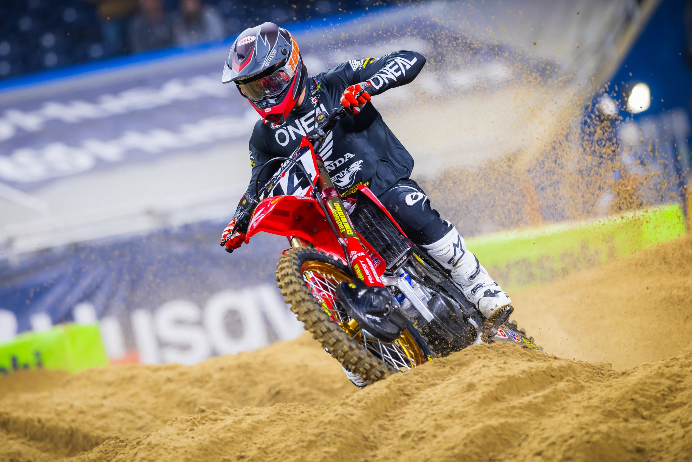

Earlier this week, Aaron Plessinger, the lucky number 7, had a bad crash in Detroit, and now he’s said that he’ll be out the rest of the Supercross Season. Hopefully he’ll be ready to race in time for Motocross. Ken Roczen took home first place in Detroit, while Chase Sexton took the second place finish. And finally, Malcolm Stweart came in third, his first time on the podium in a while. For the Overall points, we have Eli Tomac first in points, with 229, Hunter Lawrence second place, and Ken Roczen third. Hunter Lawrence and Ken Roczen are 10 points apart. The Ducati Racing Team finally returned in the Detroit Round, with rider Dylan Ferrandis competing in the race for points this season. He finished 7th overall, and is now 11th in points. During the St. Louis race, it seems Chase Sexton had a bad fall, he ended up not finishing the race. We’re still waiting on further details about the accident. Now, let’s talk a little bit about Jo Shimoda, the 250 East racer who is still racing, despite having broken his neck a while back. Unfortunately, during the St. Louis race, which was an East and West showdown, he had a bad fall during the qualifying races and possibly tore some of the ligaments in his ankle. Haiden Deegan and Cole Davies had a huge battle during the St. Louis, but then again, when are they not battling? Davies must still be salty after the end of the Motocross Season last year… Deegan is, of course, a dirty competitor, doing whatever it takes to stay as the points leader and keep him on the podium. Rumor has it that Deegan is going to be racing in the 450 class in the last race of the Supercross Season. And he's already said that he's going to be racing in the 450 class for the Motocross Season, racing against some of the best riders we've seen.